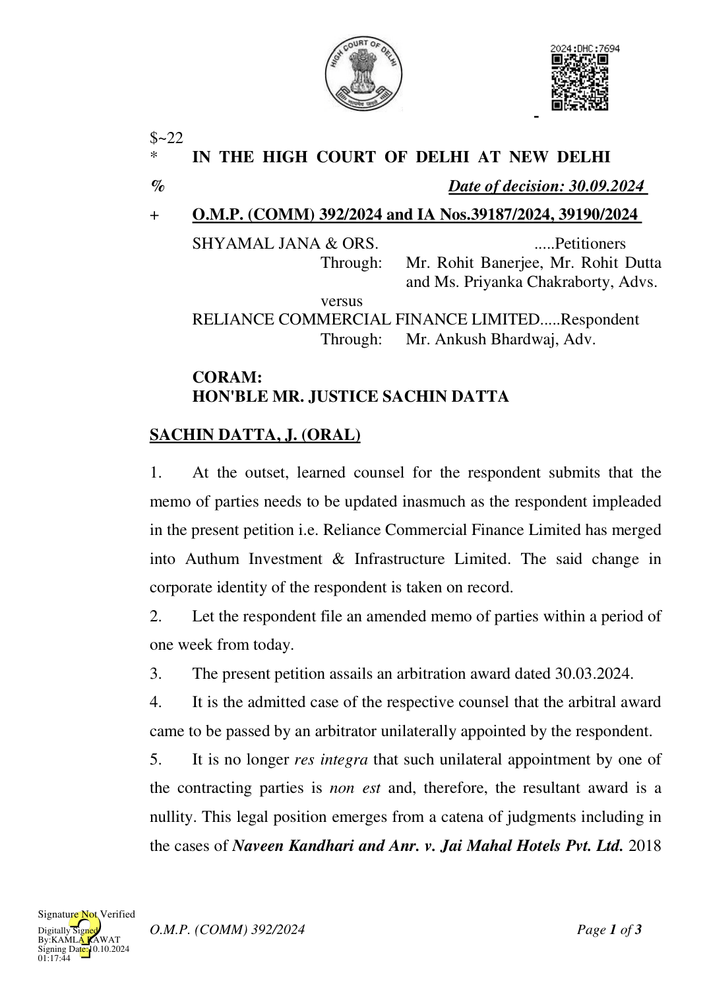

SCC OnLine Del 9180, Sunil Sethi v. Hero Fincorp Ltd., 2024 SCC OnLine Del 1476, Perkins Eastman Architects DPC v. HSCC (INDIA) Limited, (2020) 20 SCC 760, TRF Limited v. Energo Engineering Projects Limited, (2017) 8 SCC 377; Bharat Broadband Network Limited v. United Telecoms Limited, (2019) 5 SCC 755; Kotak Mahindra Bank Ltd. v. Narendra Kumar Prajapat 2023 SSC OnLine Del 3148 and Radhika Engineering Co. v. Telecommunication Consultants India Ltd. 2024 SCC OnLine Del 4262.
- In view of the aforesaid, learned counsel for the parties do not seriously dispute that the impugned award is liable to be set aside.
- Consequently, the impugned arbitral award dated 30.03.2024 is set aside. Since the disputes between the parties is required to be adjudicated on merits by a duly constituted arbitral tribunal, respective counsel for the parties jointly request that an independent sole arbitrator be appointed by this court.
- Accordingly, at the joint request of the parties, Mr. P.K. Sexena, Additional District Judge (Retd.) (Mob.: 9910384668) is appointed as the Sole Arbitrator to adjudicate the disputes between the parties.
- The learned Sole Arbitrator may proceed with the arbitration proceedings subject to furnishing to the parties requisite disclosure as required under Section 12 of the A&C Act.
- It is further agreed between the parties that the arbitration shall be conducted under the aegis of, and as per rules of the Delhi International Arbitration Centre (DIAC). It is ordered accordingly. Let a copy of this order be communicated to the Organiser, DIAC.
- Since the petitioner is based in West Bengal, it is directed that the
O.M.P. (COMM) 392/2024
petitioner shall be entitled to participate in the arbitral proceedings through video conferencing. The same shall be subject to the convenience and further directions of the learned sole Arbitrator.
- All rights and contentions of the parties in relation to the claims/counter-claims are kept open, to be decided by the learned Arbitrator on their merits, in accordance with law.
- Nothing in this order shall be construed as an expression of opinion on the merits of the respective contentions/claims of the parties.
- The petition is disposed of in the above terms.
- All pending applications also stand disposed of.
SACHIN DATTA, J
SEPTEMBER 30, 2024/cl
O.M.P. (COMM) 392/2024